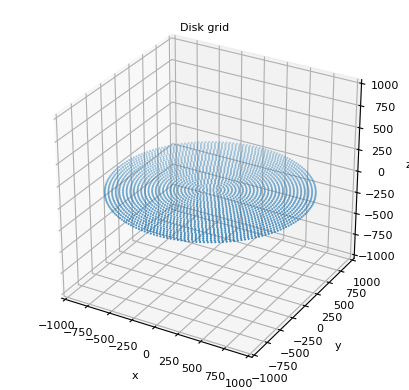
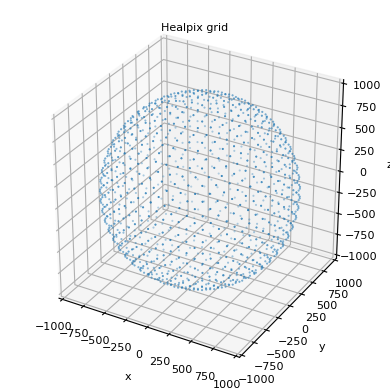

Grid of coordinates¶
-
class
arepy.coord.grid(bins=0, extent=None, points='centers', scatter=None, **opt)¶
-
class
arepy.coord.gridDisc(bins, extent=None, points='edges', scatter=None, **opt)¶ Create a disk grid with from concentric circles

-
class
arepy.coord.gridHealpix(bins=0, extent=None, points='centers', scatter=None, **opt)¶ Create a point grid from a healpix sphere pixels

-
class
arepy.coord.gridRays(bins=0, extent=None, points='centers', scatter=None, **opt)¶ Create a grid of rays using healpix

View the source code of the plot